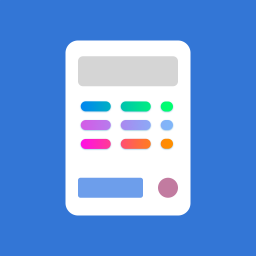
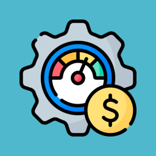

Mobile POS (Small Business)

Mobile POS (Small Business) is a simple and easy-to-use checkout system on smartphones.
Features:
Support using camera lens as barcode scanner.
Barcode support EAN13 and Code39.
Discount settings can be applied to the entire transaction or to individual products.
Sales history.
Invoices can be printed using A4 printers that generally support AirPrint function.
Product information can add pictures and inventory management.
Product unit price and inventory changed history.
Membership system management.
Product data can be added in batches using CSV files. The template is placed in the program document folder named 'Product Template.csv'
The database can be backed up and restored, and the backup location is in the program document folder.

Expenses Records

Expenses Records is an optimized application for personal expenses management.
Features:
Categorize Transactions: Organize your spending by assigning categories to each transaction, such as groceries, utilities, or entertainment, for better understanding and analysis of your financial habits.
Detailed Reports: Gain valuable insights into your spending habits with comprehensive reports and visualizations, allowing you to identify trends, areas of overspending, and opportunities for saving.
Sync Across Devices: Seamlessly access your financial data from any device, ensuring you have real-time access to your expense information whenever and wherever you need it.
User-Friendly Interface: Navigate and interact with your financial data effortlessly thanks to our intuitive and user-friendly interface, designed to make managing your finances a breeze.
Security: Support passcode control and biometric authentication.
Import Data: Expenses and Income data can be added in batches using CSV files. The template is placed in the program document folder.
Backup and Restore: The database can be backed up and restored, and the backup location is in the program document folder.